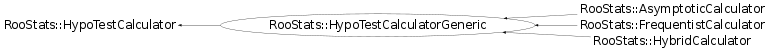

class RooStats::HypoTestCalculatorGeneric: public RooStats::HypoTestCalculator
Function Members (Methods)
public:
protected:
| virtual int | CheckHook() const |
| virtual int | PreAltHook(RooArgSet*, double) const |
| virtual int | PreNullHook(RooArgSet*, double) const |
private:
| RooStats::SamplingDistribution* | GenerateSamplingDistribution(RooStats::ModelConfig* thisModel, double obsTestStat, RooAbsPdf* impDens = NULL, const RooArgSet* impSnapshot = NULL) const |
| void | SetAdaptiveLimits(Double_t obsTestStat, Bool_t forNull) const |
| void | SetupSampler(const RooStats::ModelConfig& model) const |
Data Members
protected:
| const RooStats::ModelConfig* | fAltModel | |
| const RooAbsData* | fData | |
| RooStats::TestStatSampler* | fDefaultSampler | |
| RooStats::TestStatistic* | fDefaultTestStat | |
| const RooStats::ModelConfig* | fNullModel | |
| RooStats::TestStatSampler* | fTestStatSampler |
Class Charts
{kind=link}
{kind=link}
{kind=link}
{kind=link}

Function documentation
HypoTestCalculatorGeneric(const RooAbsData& data, const RooStats::ModelConfig& altModel, const RooStats::ModelConfig& nullModel, RooStats::TestStatSampler* sampler = 0)
Constructor. When test stat sampler is not provided uses ToyMCSampler and RatioOfProfiledLikelihoodsTestStat and nToys = 1000. User can : GetTestStatSampler()->SetNToys( # )
HypoTestResult* GetHypoTest() const
HypoTestCalculatorGeneric(const RooAbsData& data, const RooStats::ModelConfig& altModel, const RooStats::ModelConfig& nullModel, RooStats::TestStatSampler* sampler = 0)
void SetNullModel(const RooStats::ModelConfig& nullModel)
set the model for the null hypothesis (only B)
{ fNullModel = &nullModel; }const ModelConfig* GetNullModel(void)
set the model for the alternate hypothesis (S+B)
{ return fNullModel; }TestStatSampler* GetTestStatSampler(void)
Returns instance of TestStatSampler. Use to change properties of TestStatSampler, e.g. GetTestStatSampler.SetTestSize(Double_t size);
{ return fTestStatSampler; }void SetAdaptiveLimits(Double_t obsTestStat, Bool_t forNull) const
SamplingDistribution* GenerateSamplingDistribution(RooStats::ModelConfig* thisModel, double obsTestStat, RooAbsPdf* impDens = NULL, const RooArgSet* impSnapshot = NULL) const